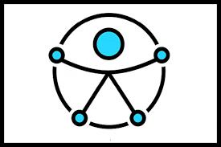

Conhecimentos nas principais tecnologias
-

-

-

-

-

-

-

-

-

- 
Sobre Mim
Sou formado em Análise e Desenvolvimento de Sistemas e atualmente estou ampliando meus conhecimentos em desenvolvimento Front-End por meio do programa Santander Coders 2025.
Tenho me dedicado a construir interfaces web modernas, responsivas e acessíveis, utilizando HTML, CSS, JavaScript e boas práticas de UI/UX.
Também possuo familiaridade com Git, GitHub e princípios de versionamento de código, além de conhecimentos iniciais em React e consumo de APIs.
Participei de projetos práticos que envolvem desde páginas interativas e temáticas até sistemas completos com autenticação, cronômetro e integração com banco de dados, sempre buscando evoluir como desenvolvedor e entregar soluções funcionais e bem projetadas.
Estou em busca de oportunidades para atuar como desenvolvedor Front-End e contribuir com meu conhecimento, criatividade e vontade de aprender continuamente.
🛠️ Tecnologias: HTML5, CSS3, JavaScript, Python, Git, GitHub, Responsividade, React (básico), Node.js (básico), MongoDB (básico)
📍 Local: Nossa Senhora do Socorro/Sergipe.
📫 Aberto para conexões e oportunidades!
Tecnólogo
Análise e Desenvolvimento de Sistemas — Estácio (2022 - 2025)
Experiências
Analista de Sistemas — F1 Tech (2024 - 2025)
Cursos
- Santander 2025 Front-End
- Suzano-Python Developer
- Introdução à Programação e Pensamento Computacional
- Introdução a criação de Websites com HTML5 e CSS3
- Prmeiros passos com .NET